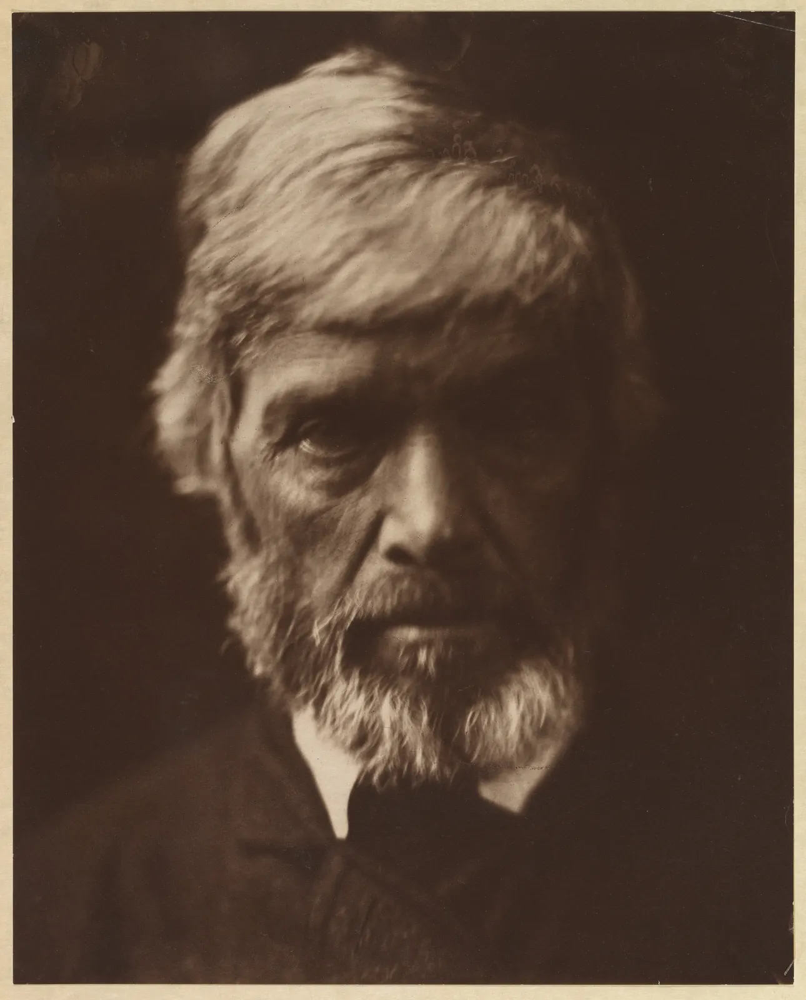

초점과 심도
카페 창가에서 찍은 사진 한 장을 떠올려 보자. 찻잔은 또렷한데 뒤의 책장은 색 얼룩으로 녹아 있다. 같은 자리에서 휴대폰으로 찍으면 책장의 책 제목까지 읽히고, 인물 모드를 켜면 그제야 배경이 흐려진다. 무엇이 선명하고 무엇이 흐려지는지는 우연이 아니다. 렌즈가 한 거리에만 정확히 초점을 맞춘다는 사실, 그리고 "선명하다"는 말이 눈과 맺은 약속이라는 사실에서 모두 나온다. 이 장은 그 두 가지에서 출발해 피사계 심도, 과초점 거리, 흐림의 모양까지 계산과 그림으로 따라간다.
- 얇은 렌즈 공식으로 초점을 맞춘다는 것이 무엇인지, 초점 밖의 점이 왜 원이 되는지 설명한다.
- 착란원이 감상 크기와 거리에 따라 정한 "선명함의 문턱"이라는 것을 안다.
- 조리개, 초점거리, 촬영 거리로 피사계 심도를 계산하고, 앞뒤가 왜 대칭이 아닌지 이해한다.
- 과초점 거리와 작은 센서의 깊은 심도로 휴대폰 사진이 늘 선명한 이유를 설명한다.
- 보케의 모양과 휴대폰 인물 모드의 합성 흐림이 광학적 흐림과 어떻게 다른지 비교한다.
초점을 맞춘다는 것: 얇은 렌즈 공식
볼록렌즈는 한 점에서 퍼져 나온 빛을 다시 한 점으로 모은다. 물체가 렌즈에서 멀수록 빛이 모이는 점은 렌즈에 가까워지고, 아주 먼 물체의 빛은 렌즈 뒤 초점거리(Focal length) \(f\)만큼 떨어진 곳에 모인다(5장). 물체까지의 거리 \(s\)와 상이 맺히는 거리 \(s'\)의 관계가 얇은 렌즈 공식이다.
센서는 카메라 몸체 안에 고정되어 있다. 그래서 초점을 맞춘다는 것은 렌즈(또는 렌즈 안의 일부 유리)를 앞뒤로 움직여, 원하는 거리 \(s\)의 상이 정확히 센서 위에 맺히게 하는 일이다. 초점 링을 돌릴 때 렌즈 경통이 조금 늘어나는 것이 바로 이 몇 밀리미터다. 휴대폰 카메라도 작은 전자석으로 렌즈를 밀고 당겨 같은 일을 한다.
그림 2가 이 장 전체의 열쇠다. 초점면 밖의 점은 센서 위에서 점이 아니라 작은 원이 된다. 이 원을 흐림 원(Blur circle)이라고 부르고, 원의 지름은 세 가지가 정한다. 상이 센서에서 얼마나 어긋났는지, 렌즈 구멍(구경)이 얼마나 넓은지, 그리고 초점거리다. 조리개 값 \(N\)(f/N)은 초점거리를 구경으로 나눈 수이므로(2장), 구경 지름은 \(f/N\)이다. 이를 정리하면 초점을 거리 \(s\)에 맞췄을 때 거리 \(d\)에 있는 점의 흐림 원 지름은 \(b = \dfrac{f^2}{N(s-f)}\cdot\dfrac{|d-s|}{d}\)이다.
아래 시뮬레이터에서 물체(왼쪽 화살표)와 센서(오른쪽 막대)를 직접 끌어 본다. 화면은 실제 비율이 아니다. 렌즈 왼쪽은 거리를 눈금 간격이 점점 벌어지는 로그 눈금으로 줄였고, 오른쪽은 몇 밀리미터의 움직임이 보이도록 크게 늘렸다.
상이 맺히는 자리와 흐림 원
흐림 원은 조리개를 조이면 구경에 비례해 작아지고, 초점거리가 짧으면 초점거리의 제곱에 비례해 작아진다. 같은 3 m의 책장이라도 50 mm f/1.8에서는 흐림 원이 거의 1 mm지만 18 mm f/8에서는 0.03 mm 남짓이다. 이제 남은 질문은 "몇 밀리미터부터 흐려 보이는가"다.
착란원: 선명함은 약속이다
센서 위 흐림 원이 0.001 mm라면 누구도 흐리다고 느끼지 않는다. 1 mm라면 누구나 흐리다고 느낀다. 그 사이 어딘가에 문턱이 있고, 이 문턱으로 정한 흐림 원의 지름을 착란원(Circle of confusion, CoC)이라고 부른다. 착란원보다 작은 흐림은 "선명", 큰 흐림은 "흐림"으로 친다는 약속이다.
문턱이 약속인 이유는 사진을 얼마나 크게, 얼마나 가까이서 보느냐에 따라 같은 흐림이 다르게 보이기 때문이다. 센서 위 0.02 mm의 흐림은 A5 도록(긴 변 21 cm)에 인쇄하면 약 9배로 커져 0.18 mm가 되고, 같은 사진을 1 m 너비 현수막으로 뽑으면 0.85 mm가 된다. 흔히 쓰는 관례는 "약 20×25 cm 인화를 25 cm 거리에서 볼 때 0.2 mm 안팎의 흐림은 점으로 보인다"는 것이다. 이 각도(약 0.0008라디안, 약 2.7분)를 센서 크기로 되돌린 값이 카메라와 심도 계산표가 쓰는 착란원이다. 35 mm 필름 크기(풀프레임)에서는 보통 0.03 mm, 그보다 1.5배 작은 APS-C에서는 0.02 mm를 쓴다. 대각선의 1/1500~1/1730처럼 제조사와 책마다 조금씩 다른 값을 쓰므로, 심도표의 숫자는 기준이 바뀌면 같이 바뀌는 근사로 읽는다. 이 장은 APS-C의 착란원을 0.02 mm로 둔다.
아래 시뮬레이터는 감상 조건을 바꾸며 허용되는 착란원이 어떻게 달라지는지 보여 준다. 왼쪽 그림은 센서 위의 흐림이 인쇄물에서 얼마나 커지는지를, 오른쪽 돋보기는 인쇄물 위의 작은 글자를 확대해 흐림 점(주황 원)과 그 거리에서 눈이 구별할 수 있는 크기(점선 원)를 함께 보여 준다.
얼마나 흐려야 흐려 보이나
피사계 심도: 선명해 보이는 앞뒤 범위
착란원을 정하면 피사계 심도가 정해진다. 초점면 앞뒤로 흐림 원이 착란원보다 작은 범위가 곧 심도다. 계산의 중심에는 과초점 거리(Hyperfocal distance) \(H\)가 있다. 무한히 먼 곳의 흐림 원이 딱 착란원이 되는 초점 거리다. \(H\)를 구해 두면 가까운 쪽 한계와 먼 쪽 한계가 바로 나온다.
식이 말하는 것을 말로 풀면 네 가지다. 조리개를 조이면(\(N\) 증가) 심도가 깊어진다. 초점거리가 길면 심도가 얕아진다. 가까이 초점을 맞출수록 얕아진다. 그리고 앞쪽보다 뒤쪽이 더 깊다. 아래 시뮬레이터는 위에서 내려다본 그림 읽기 모임이다. 탁자에 둘러앉은 여섯 사람이 카메라에서 2.0 m부터 4.0 m 사이에 있다. 초점 막대를 끌어 초점 거리를 옮기고, 조리개와 초점거리를 바꿔 몇 사람이 심도 안에 들어오는지 본다.
그림 읽기 모임의 피사계 심도
초점을 가장 앞사람에 맞추면 그 앞쪽 심도는 아무도 없는 빈 공간에 낭비된다. 여러 사람이 앞뒤로 있을 때는 초점을 무리의 가운데보다 조금 앞에 두어야 앞뒤 한계를 고르게 쓸 수 있다. 위 장면에서 앞사람 2.0 m와 뒷사람 4.0 m를 똑같이 아슬아슬하게 담는 초점 거리는 두 거리의 조화 평균인 2.67 m, 정확히 앞에서 3분의 1 지점이다. 아래 그림은 24 mm로 2.7 m에 초점을 둔 채 조리개만 바꿨을 때의 심도다.
과초점 거리, 그리고 휴대폰이 늘 선명한 이유
과초점 거리 \(H\)에 초점을 맞추면 먼 쪽 한계가 무한대가 되고, 가까운 쪽 한계는 \(H\)의 절반쯤이 된다. 풍경이나 거리 사진에서 앞의 돌담부터 먼 산까지 모두 선명하게 담고 싶을 때 쓰는 방법이다. 18 mm 렌즈를 f/8로 두면 \(H\)는 약 2.04 m이고, 여기에 초점을 맞추면 1.02 m부터 무한대까지가 심도 안에 들어온다. 초점을 무한대에 맞추면 오히려 가까운 쪽 한계가 \(H\)(2.04 m)로 물러나니 손해다.
휴대폰 카메라가 무엇을 찍어도 대체로 선명한 것도 같은 이유다. 휴대폰의 주 카메라는 센서가 아주 작아서 실제 초점거리가 몇 밀리미터에 불과하다. 5장에서 쓴 이 책의 휴대폰 모형은 센서가 8×6 mm(환산 배율 약 4.3), 실제 초점거리 6 mm로 화각이 풀프레임 26 mm와 같다. 조리개는 f/1.8로 두자. 센서가 작으니 착란원도 그만큼 작게 잡아야 하지만(0.03 ÷ 4.3 ≈ 0.007 mm), 초점거리가 워낙 짧아서 과초점 거리는 약 2.9 m밖에 안 된다. 2.9 m에 초점을 맞추면 1.45 m부터 무한대까지 선명하다. 휴대폰의 조리개 값이 f/1.8로 밝아도 배경이 잘 흐려지지 않는 이유다.
아래 시뮬레이터에서 카메라를 바꿔 가며 초점 손잡이를 끈다. 그래프는 거리마다 흐림 원이 착란원의 몇 배인지를 보여 준다. 1배 선 아래가 심도다. 가로축은 로그 눈금이다.
과초점 거리와 센서 크기
같은 화각과 같은 촬영 거리라면 심도를 정하는 것은 사실상 구경의 실제 지름이다. 그래서 센서 크기가 다른 카메라를 비교할 때는 f값에 환산 배율을 곱해 보는 환산 조리개(Equivalent aperture)가 편하다. APS-C의 50 mm f/1.8은 심도로는 풀프레임 75 mm f/2.7과 비슷하고, 위 휴대폰 모형의 26 mm f/1.8은 풀프레임으로 치면 f/8쯤(1.8 × 4.3 ≈ 7.8)의 심도를 낸다. 노출의 밝기는 f값 그대로 정해지므로(2장) 휴대폰이 f/1.8의 빛을 받는 것은 맞다. 달라지는 것은 흐림뿐이다.
보케: 흐림에도 모양이 있다
흐림 원은 사실 "원"이 아니라 렌즈 구멍의 모양이다. 센서 위에 생기는 빛의 원뿔 단면은 조리개 구멍의 그림자이기 때문이다. 평소에는 이 모양이 잘 보이지 않지만, 어두운 배경 속 작은 불빛처럼 밝은 점이 흐려지면 구멍의 모양이 그대로 드러난다. 흐린 부분의 질감과 빛망울의 모양을 통틀어 보케(Bokeh)라고 부른다. 일본어 "보케(暈け, 흐림)"에서 온 말로, 1990년대 후반 영어권 사진 잡지를 통해 퍼졌다.
조리개는 얇은 금속 날 여러 장이 겹쳐 구멍을 만든다. 조리개를 활짝 열면 날이 경통 안으로 숨어 구멍이 둥글고, 조이면 날의 개수만큼 각진 다각형이 된다. 날이 휘어진 "원형 조리개"는 조여도 덜 각진다. 그리고 화면 가장자리의 빛망울은 렌즈 경통의 앞쪽 테두리에 일부가 가려져 레몬이나 고양이 눈 모양이 된다. 아래 시뮬레이터는 50 mm 렌즈로 1 m에 초점을 맞추고 3 m 뒤 줄전구를 흐린 장면이다. 빛 하나를 끌어 화면 가장자리로 옮겨 본다.
빛망울의 모양
빛망울의 크기는 흐림 원 식을 그대로 따른다. f/1.8에서 3 m 뒤 불빛의 빛망울은 센서 위 0.98 mm, 가로 1600 px 웹 사진에서는 지름 66 px쯤이다. 조리개를 f/5.6으로 조이면 21 px로 줄어든다. 빛망울이 둥근지 각진지, 가장자리가 부드러운지 테두리가 진한지는 취향이 갈리는 부분이고 렌즈마다 개성이 다르다. 다만 화면 가득한 빛망울은 그 자체로 "장식"이 되어 무엇을 찍었는지보다 눈에 먼저 들어온다는 점은 기억해 둘 만하다.
휴대폰 인물 모드: 계산으로 만든 흐림
작은 센서로는 배경을 광학적으로 흐리기 어렵다. 그래서 휴대폰의 인물 모드(Portrait mode)는 흐림을 계산으로 만든다. 순서는 대체로 같다. 먼저 장면의 각 점이 얼마나 먼지를 추정한 깊이 지도(Depth map)를 만든다. 두 카메라의 시차, 한 화소 안을 둘로 나눈 센서의 시차, 사람 모양을 찾는 기계 학습, 일부 기종의 거리 센서를 기종에 따라 섞어 쓴다. 그다음 거의 모든 것이 선명한 원본 사진을 깊이 지도에 따라 화소마다 다른 크기로 흐린다.
이 방식은 깊이 지도가 정확하면 꽤 그럴듯하다. 문제는 깊이 지도가 틀린 곳이다. 머리카락처럼 가는 것, 유리컵처럼 투명한 것, 찻잔 손잡이 안쪽처럼 앞의 물체에 뚫린 구멍으로 배경이 보이는 곳에서 깊이 지도는 자주 틀린다. 아래 시뮬레이터의 왼쪽은 50 mm 렌즈가 광학적으로 만든 흐림, 오른쪽은 같은 장면을 거친 깊이 지도로 합성한 흐림이다. 깊이 지도의 칸을 키워 정밀도를 떨어뜨리고, 경계선을 끌어 찻잔 손잡이와 잉크병의 가장자리를 비교한다.
광학 흐림과 합성 흐림
합성 흐림의 오류는 깊이 지도만 탓할 수도 없다. 진짜 렌즈는 구경 전체로 장면을 보기 때문에, 앞의 물체 가장자리 뒤로 살짝 가려진 배경까지 흐림에 섞어 넣는다. 그래서 흐린 잉크병의 가장자리는 반투명하게 녹아 뒤가 비친다. 한 장의 사진에는 그 가려진 배경이 없으니, 합성은 그 부분을 지어내거나 번지게 둘 수밖에 없다. 최근 휴대폰은 이런 오류를 많이 줄였지만, 유리·머리카락·구멍은 여전히 가장 먼저 확인할 곳이다. 그리고 인물 모드의 흐림 세기는 보통 "f/1.4" 같은 숫자로 표시되지만, 이것은 렌즈의 실제 조리개가 아니라 흐림의 양을 흉내 낸 설정값이다.
흐림을 고른 사진가
초점 이야기를 하다 보면 선명할수록 좋은 사진 같지만, 사진의 역사에는 일부러 흐림을 고른 사람들이 있다. 영국의 줄리아 마거릿 캐머런(Julia Margaret Cameron, 1815–1879)은 마흔여덟 살에 카메라를 선물 받아 사진을 시작했다. 당시 사진계는 세부가 칼같이 선명한 상을 기술의 기준으로 여겼다. 캐머런은 인물에게 아주 가까이 다가가 얼굴로 화면을 채우고, 초점이 조금 빗나가거나 긴 노출 중에 인물이 움직여 생긴 흐림을 지우지 않았다. 사진 단체와 비평가들은 서툰 기술이라고 비판했지만, 캐머런은 초점의 "정당함"을 누가 정하느냐는 취지로 맞섰다고 전한다(1864년 존 허셜에게 보낸 편지).

19세기 말에서 20세기 초에는 사진을 회화처럼 보이게 하려는 픽토리얼리즘(Pictorialism) 사진가들이 일부러 부드럽게 흐리는 렌즈와 인화 기법을 썼다. 그 반동으로 1932년 미국 샌프란시스코에서 앤설 애덤스, 에드워드 웨스턴, 이모전 커닝햄 등이 모인 "그룹 f/64"는 대형 카메라의 가장 작은 조리개 이름을 모임의 이름으로 걸고, 앞에서 뒤까지 모두 선명한 사진을 사진다운 사진이라고 내세웠다. 선명함과 흐림은 한쪽이 옳은 기술이 아니라, 시대마다 사진이 무엇이어야 하는지를 두고 고른 태도였다.
그림과 비교해 보면 사진의 흐림이 얼마나 독특한지도 보인다. 수묵 산수화는 먼 산을 옅은 먹으로 흐리게 그려 거리를 만든다(ColorBook 6장). 이것은 공기가 먼 것의 대비를 낮추는 대기 원근이라 멀수록 한 방향으로만 흐려진다. 사진의 초점 흐림은 초점면을 기준으로 앞으로도 뒤로도 흐려진다. 가까운 잉크병이 흐린 그림 1의 정물처럼, 화가가 손으로는 잘 그리지 않던 흐림이다. 그래서 초점 흐림은 보는 이에게 "이것은 렌즈로 찍은 장면"이라는 신호가 되기도 한다.
두 장면의 초점 정하기
이제 지금까지의 계산을 한 장면 위에서 합친다. 아래 종합 시뮬레이터는 이 장의 케이스에 나오는 두 장면을 그린다. 하나는 50 mm 단렌즈로 1 m 앞에서 찍는 창가 정물, 다른 하나는 줌을 24 mm에 두고 찍는 그림 읽기 모임이다. 그림 위를 누르거나 끌면 그 자리에 있는 물체의 거리로 초점이 옮겨 간다. 조리개를 바꿔 가며 주인공이 심도 안에 다 들어오는지, 배경이 얼마나 흐린지, 그 흐림이 장면을 설명하는지 가리는지를 본다.
종합: 초점 위치와 조리개 고르기
두 장면에서 고를 것은 서로 반대 방향이다. 정물은 주인공이 작고 가까워 심도가 몇 센티미터밖에 안 되므로 주인공을 다 담는 쪽으로 조리개를 조여야 하고, 모임 장면은 사람들이 몇 미터에 걸쳐 흩어져 있어 초점 위치를 잘 골라야 한다. 어느 쪽이든 조리개를 한 단 조일 때마다 빛은 절반으로 줄어 셔터를 느리게 하거나 감도를 올려야 한다(2장). 심도는 공짜가 아니다.
서윤의 겨울 촬영 노트
모두 선명한 모임, 찻잔만 선명하지 않은 정물
12월 셋째 주 목요일 저녁, 책방 E의 그림 읽기 모임이 열렸다. 서윤은 미러리스의 줌을 24 mm에 두고 긴 탁자 끝에서 셔터를 눌렀다. 5장에서 실내 기본 초점거리를 18 mm로 정했지만, 탁자 끝에서는 24 mm로도 여섯 사람이 다 들어왔고 가장자리 사람의 얼굴이 덜 늘어났다. 탁자 양쪽에 앉은 여섯 사람은 카메라에서 2.0 m부터 4.0 m 사이에 있었다. 개방(f/4)으로 가장 앞사람의 눈에 초점을 맞춘 첫 장은 앞사람만 또렷하고, 맞은편 끝에서 그림을 들고 선 진행자의 얼굴은 무르게 퍼졌다. 이 책의 모델로 계산하면 2.0 m에 초점을 둔 f/4의 심도는 1.57~2.76 m라서 여섯 명 중 네 명이 심도 밖이다.
서윤은 계산을 다시 했다. 앞사람(2.0 m)과 뒷사람(4.0 m)을 똑같이 담는 초점 거리는 두 거리의 조화 평균인 2.67 m, 탁자 가운데보다 조금 앞에 앉은 사람 자리다. 거기에 초점을 맞추면 f/4에서도 1.97~4.30 m로 여섯 명이 겨우 들어오지만, 앞사람과 진행자의 흐림이 착란원의 0.94배, 0.87배로 아슬아슬했다. 사람들은 이야기하며 몸을 앞뒤로 움직였다. 서윤은 한 단을 더 조인 f/5.6을 골랐다. 심도는 1.78~5.63 m가 되고 가장 흐린 사람도 착란원의 0.67배에 머문다. 배경의 책장(약 6 m)은 착란원과 비슷한 정도로만 흐려 "책방에서 열린 모임"이라는 것이 사진에 남았다. 한 단 조인 대가로 빛이 절반이 된 것은 노출을 다시 맞춰야 할 몫으로 적어 두었다.
다음 날 아침에는 창가 정물을 찍었다. 찻잔과 책 두 권을 창가 탁자에 놓고 50 mm 단렌즈로 1.0 m 떨어져 찍었다. 휴대폰 사진을 보던 서윤은 "배경을 확 날리고 싶다"며 f/1.8로 열었다. 화면은 예뻤지만 확대하니 찻잔의 손잡이 쪽과 앞 가장자리가 흐렸다. f/1.8의 심도는 98.7~101.4 cm, 2.7 cm뿐이라 지름 8 cm의 찻잔조차 다 담지 못했다. 2 m 뒤 책장은 흐림 원이 착란원의 49배(가로 1600 px 웹 사진에서 66 px)라 책장인지 무늬인지 알 수 없었다. 사진을 본 책방 주인이 말했다. "이건 우리 가게 창가가 아니라 어느 카페 광고 같네요. 사진이 실제 가게보다 예쁘면 손님이 실망해요." 휴대폰 인물 모드로도 찍어 보았는데, 찻잔 손잡이 구멍 속 책장이 선명하게 남아 오려 붙인 것처럼 보였다.
서윤은 f/5.6을 골랐다. 초점은 찻잔의 앞 가장자리가 아니라 정물 깊이의 가운데인 찻잔 중심(1.0 m)에 두었다. 심도는 95.9~104.5 cm(8.5 cm)로 찻잔 전체가 들어온다. 책장은 착란원의 16배(웹 사진에서 약 21 px)로 흐려 책 제목은 읽히지 않지만 책등이 늘어선 서가라는 것은 알아볼 수 있다. 도경은 사진을 보고 고개를 끄덕였다. "흐림도 받아 적은 거야. 저 거리에 책장이 있었다는 걸."
핵심 정리
- 렌즈는 한 거리(초점면)만 정확히 센서 위에 옮긴다. 얇은 렌즈 공식 1/f = 1/s + 1/s′가 초점과 상의 자리를 잇고, 초점 맞추기는 렌즈를 몇 밀리미터 움직이는 일이다.
- 초점면 밖의 점은 센서 위에서 흐림 원이 된다. 그 지름은 구경(f/N)에 비례하고, 초점거리가 길수록, 초점에서 멀수록 커진다.
- 착란원은 "이보다 작은 흐림은 선명으로 친다"는 약속이다. 감상 크기와 거리에서 나온 관례로, APS-C는 보통 0.02 mm, 풀프레임은 0.03 mm를 쓴다. 크게 뽑아 가까이 볼수록 엄격해진다.
- 피사계 심도는 조리개를 조이면 깊어지고, 초점거리가 길거나 가까이 찍으면 얕아진다. 뒤쪽이 앞쪽보다 깊지만 "1/3 : 2/3"은 거리에 따라 바뀌는 대략값이다.
- 과초점 거리에 초점을 맞추면 그 절반부터 무한대까지 선명하다. 휴대폰은 초점거리가 짧아 과초점 거리가 몇 미터에 불과해서 늘 선명하다.
- 보케는 렌즈 구멍의 그림자다. 조리개 날의 수, 개방 여부, 화면 위치(고양이 눈)가 빛망울의 모양을 바꾼다. 휴대폰 인물 모드의 흐림은 깊이 지도로 계산한 것이라 구멍, 유리, 가는 털에서 틀리기 쉽다.
- 조리개를 끝까지 조이면 회절이 상을 무르게 한다. APS-C에서는 f/16 근처에서 회절 번짐이 착란원과 같아진다. 심도는 빛과 화질을 내주고 사는 것이다.
확인 퀴즈
1. 같은 APS-C 카메라, 같은 50 mm 렌즈로 1 m 앞의 찻잔에 초점을 맞추고 f/1.8과 f/5.6으로 한 장씩 찍었다. 두 사진에 대한 설명으로 옳은 것은?
2. 앞사람이 2 m, 뒷사람이 4 m에 있는 단체 사진을 찍는다. 조리개를 정해 놓고 두 사람을 가장 고르게 담으려면 초점을 어디에 두는 것이 가장 알맞은가?
3. 조리개가 f/1.8인 휴대폰 주 카메라로 찍은 사진은 배경이 잘 흐려지지 않는데, f/1.8인 미러리스 50 mm 렌즈는 배경이 크게 흐려진다. 가장 알맞은 설명은?
4. 휴대폰 인물 모드로 찻잔을 찍었더니 손잡이 구멍 속 배경만 선명하게 남았다. 가장 알맞은 설명은?